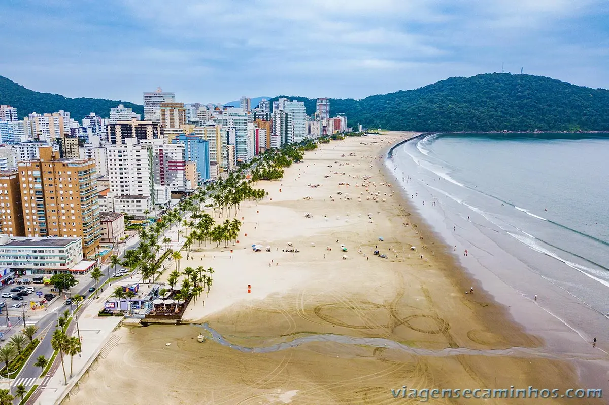
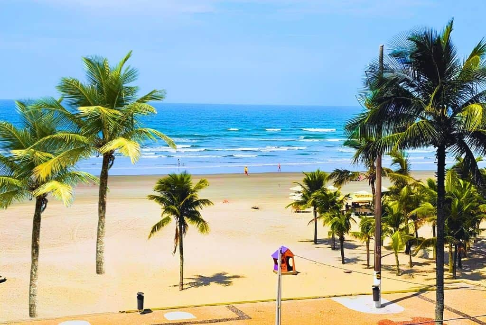

Praia Grande ostenta mais de 20 quilômetros de praias contínuas, emolduradas por coqueiros, ciclovias modernas e quiosques estruturados à beira-mar. O destino une a tranquilidade de um pôr do sol inesquecível com o dinamismo de um litoral completo, ideal para relaxar e renovar as energias.
Conheça a história, a importância e as riquezas naturais e culturais que fazem Praia Grande única.
Praia Grande é o segundo destino mais visitado de São Paulo, consolidando-se como força econômica e turística da Baixada Santista. Seus 22 km de orla atraem milhões de turistas, movimentando fortemente o comércio e o setor imobiliário. Além do turismo, a cidade é referência regional em segurança integrada e infraestrutura urbana.
Praia Grande está estrategicamente localizada na Baixada Santista, a apenas 85 km da capital paulista e ao lado de Santos. Seu acesso rápido pelas rodovias Anchieta e Imigrantes conecta facilmente o Planalto ao litoral sul do estado. Essa proximidade geográfica atrai um fluxo massivo de turistas e consolida o município como um polo de fácil acesso na região.
Praia Grande abriga o maior sistema de ciclovias à beira-mar do Brasil, com mais de 100 km de pistas dedicadas às bicicletas. A cidade também se destaca na história militar com o Fortaleza de Itaipu, erguido em 1902 para proteger a entrada da Baixada Santista e mantido preservado até hoje. Outro marco cultural é a Praça da Paz, que exibe bustos de personalidades históricas mundiais com até sete metros de altura.
Praia Grande possui uma das economias mais dinâmicas da Baixada Santista, movida pelo forte mercado imobiliário e pelo comércio de rua. O turismo de massa é o grande motor financeiro da cidade, sustentando os setores de hotelaria, gastronomia e serviços locais. Essa força de consumo atrai constantemente grandes redes e investimentos, consolidando o município como um polo comercial em expansão.
Praia Grande é um verdadeiro gigante do turismo litorâneo, famosa por sua orla totalmente urbanizada de 22 quilômetros com ciclovias modernas e quiosques padronizados. Além das praias movimentadas do Canto do Forte e do Boqueirão, o lazer se estende ao Palácio das Artes na cena cultural e ao Portinho para atividades em família junto à natureza.
Praia Grande preserva uma rica biodiversidade entre o mar e a Mata Atlântica, tendo o Parque Estadual Serra do Mar como destaque. Seus manguezais e restingas na região do Portinho abrigam diversas espécies marinhas e aves nativas. Esse cenário intocado consolida o município como um importante polo regional de ecoturismo.
Descubra alguns dos destinos que valem a visita em Praia Grande.
| Localização | Atração | Indicação | Nota dos visitantes |
|---|---|---|---|
| Canto do Forte | Fortaleza de Itaipu | História e cultura | 9,5/10 |
| Canto do Forte | Praia do Canto do Forte | Praia e lazer | 9,0/10 |
| Boqueirão | Palácio das Artes | Cultura e exposições | 8,8/10 |
| Sítio do Campo | Portinho (Parque Ézio Dall'Acqua) | Natureza e lazer | 8,5/10 |
| Guilhermina | Feirinha de Artesanato | Compras e gastronomia | 8,5/10 |
| Boqueirão | Praça da Paz | Monumentos e lazer | 8,0/10 |